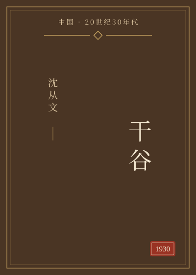
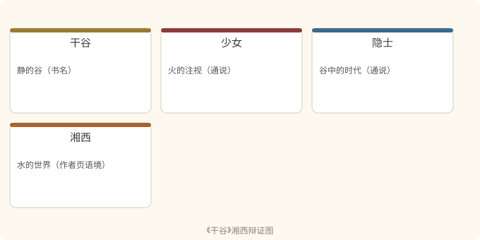

干谷
一、基本信息
| 作者 | 沈从文 |
|---|---|
| 成书/出版 | 作者页注记：Britannica 语境（湘西短篇——年份通说待核） 沈从文：从湘西走向世界（人民日报海外版，刊中国作家网）（官方文学机构） |
| 国别/地区 | 中国 |
| 时代 | 近代 · 20世纪30年代 |
| 体裁 | 短篇小说 |
| 语言 | 汉语 |

《干谷》湘西辩证图（主题·结构图）
二、创作背景
作者页注记：干谷——'（Britannica 语境——湘西短篇）'——篇目口径待核。
Britannica：沈从文——京派小说家（作者页语境）。
题材（通说待核）：湘西的少女与隐士——'干谷'的静与火。
三、内容脉络
（通说待核）干谷的隐居者与白耳一族。
（通说待核）'火'与'静'的湘西辩证。
四、主要人物表
| 人物 | 身份 | 说明 |
|---|---|---|
| 幺幺 | 少女 | （通说待核） |
| 隐士 | 谷中人 | （通说待核） |
五、主题与艺术特点
- 湘西的'干谷'（书名语境——通说待核）。
- 少女与隐士（通说待核）。
- '水'与'火'的意象（通说待核）。
六、影响与评论
- Britannica：沈从文短篇传统（作者页语境——待核）。
沈从文：从湘西走向世界（人民日报海外版，刊中国作家网）（官方文学机构） - Britannica：《边城》为代表作（作者页交叉）。
沈从文：从湘西走向世界（人民日报海外版，刊中国作家网）（官方文学机构）
七、阅读建议
难点
- 湘西口语与文言的混合。
- '干谷'的地名虚构。
- 《干谷》（人民文学出版社《沈从文全集》等——通说待核）。
- 1930年代刊物发表说待核。
沈从文短篇侧选；与《边城》对读。
八、待核实
- 篇目归属核对（'干谷'是否为沈作——通说待核）。
- 发表年份与刊物待核。
- 人物名核对（通说）。